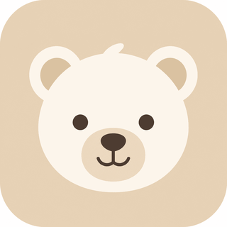
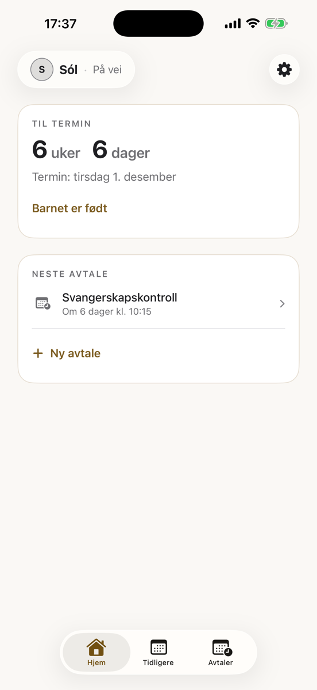
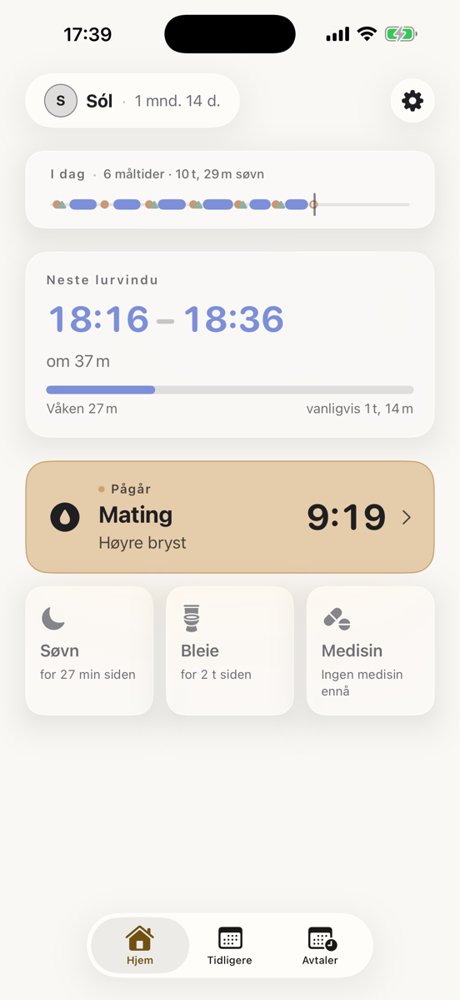
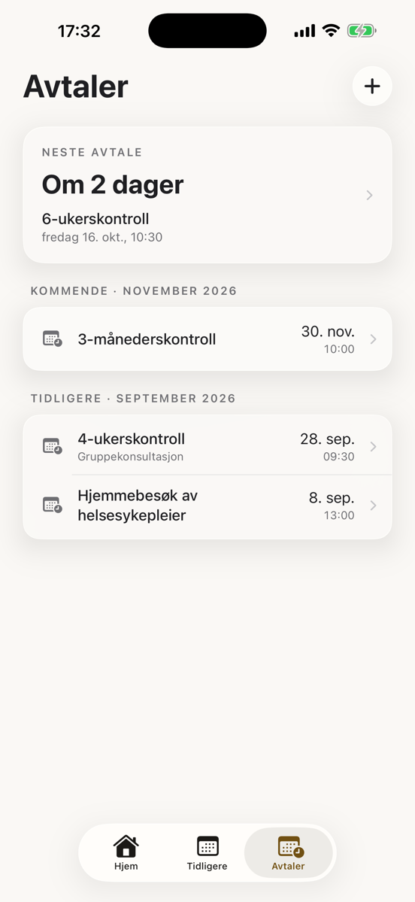

Fra første ultralyd til første grøt.
Én app fra graviditet til 6 måneder. Tell ned til termin og hold styr på kontrollene – og når babyen kommer, logger dere mating, søvn og bleier på hver deres telefon.

Hele veien, i én app
De fleste apper er enten for graviditeten eller for babyen. Barnið er begge deler – og alt følger med når babyen er født.
Graviditet
Nedtelling til termin og alle svangerskapskontrollene på ett sted. Trykk «Barnet er født», så går appen rett over til babyen.
Mating, søvn og bleier
Logg med ett trykk – hver med sin farge. Ingen lapper, ingen meldinger frem og tilbake.
Begge foreldre, samme bilde
Dere ser det samme i sanntid, hver på sin telefon – ingen trenger å spørre «når spiste hun sist?».
Husker hvilket bryst
Barnið husker hvilken side du brukte sist, så du slipper å huske det klokka tre om natta.
Sovetid
Barnið lærer babyens søvnmønster og foreslår beste tid for neste lur, før babyen blir overtrøtt. (Premium)
Medisin og vitaminer
Kryss av for D-vitamin og se hvem som ga og når. Appen registrerer bare det du skriver inn; den regner aldri ut doser.
Slik ser det ut
Enkelt og raskt å bruke – med én hånd, midt på natta.


Vanlige spørsmål
Hva er Barnið?
Barnið er en app for iPhone som følger dere fra graviditeten til babyen er 6 måneder: nedtelling til termin og svangerskapskontroller, og etter fødselen mating, søvn, bleier, medisin og vitaminer – delt mellom begge foreldrene i sanntid.
Er Barnið gratis?
Det er gratis å laste ned Barnið og logge mating, søvn, bleier og graviditet. Barnið Premium er et valgfritt abonnement med gratis prøveperiode som gir Sovetid, avtaler med påminnelser, medisinpåminnelser og flere omsorgspersoner og barn.
Kan begge foreldrene bruke appen?
Ja. Du inviterer den andre forelderen med en kode, og dere ser det samme på hver deres telefon i sanntid, også når en av dere er borte.
Virker Barnið uten nett?
Ja. Alt lagres på telefonen selv uten nett og synkroniseres med den andre forelderen når telefonen er på nett igjen.
Hvor lagres dataene?
På servere i Irland (innenfor EØS) og på telefonene til dem som deler barnet. De selges aldri, og det er ingen reklame i appen. Du kan slette kontoen og dataene når som helst i Innstillinger.
Finnes Barnið på Android?
Ikke ennå. Barnið finnes foreløpig bare for iPhone i App Store.